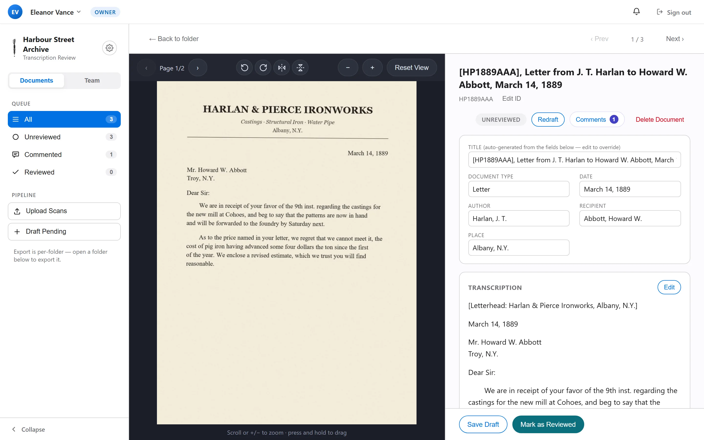
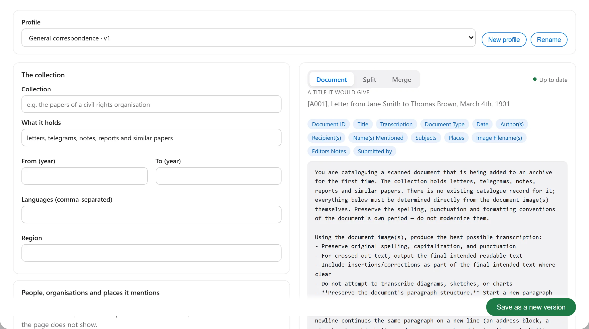
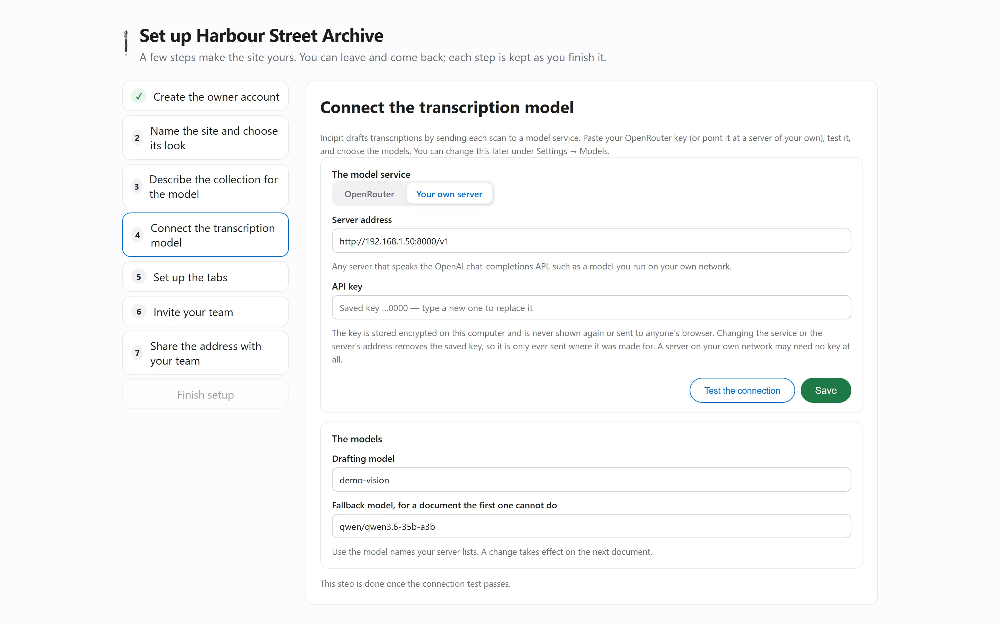
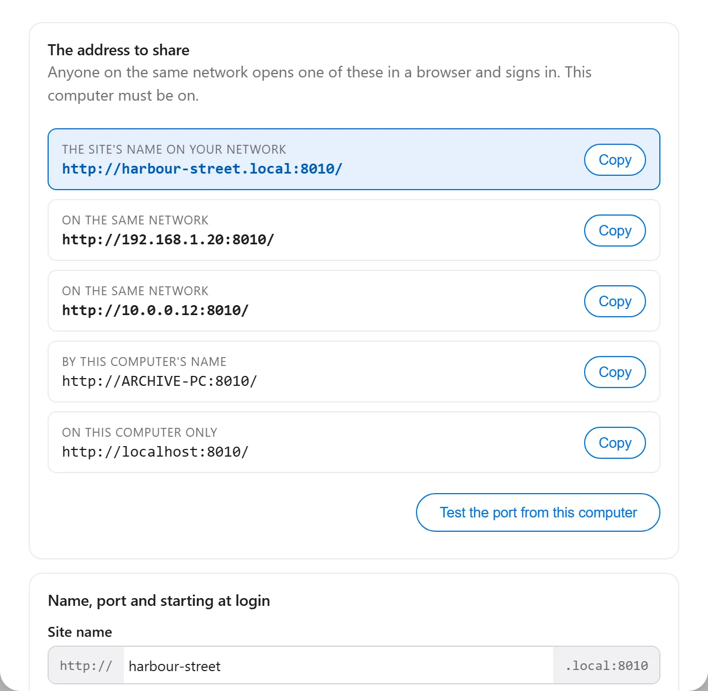
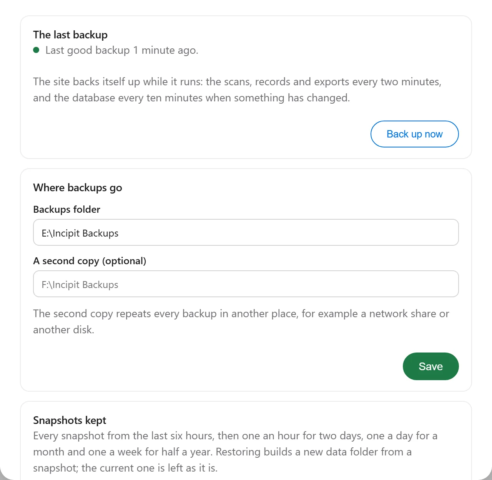
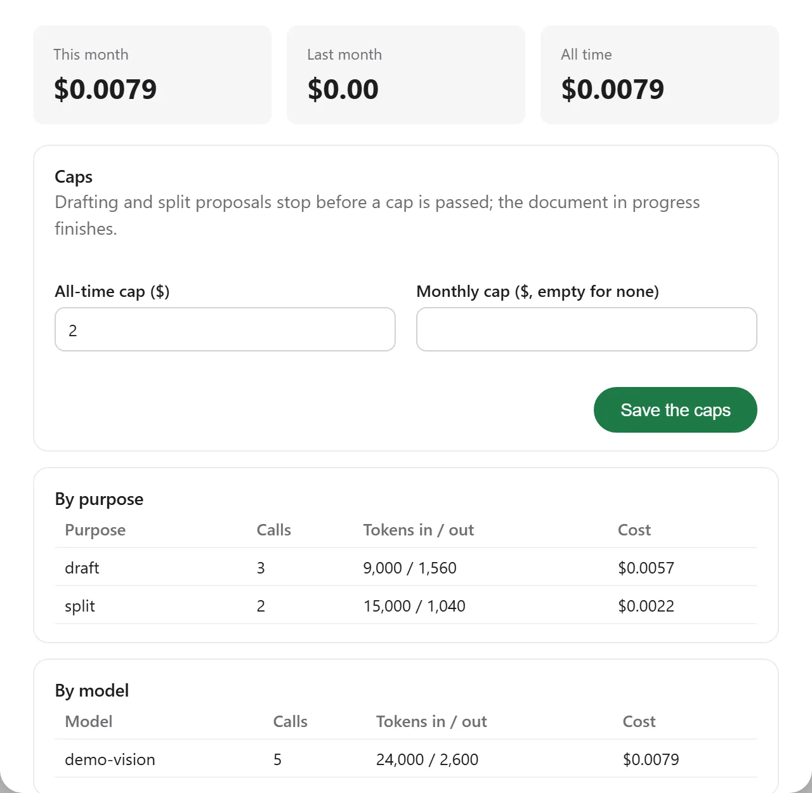

The host computer
Keeps the scans, the drafts and the backups in a folder you choose.
- Windows 10 and 11 Download
- macOSNot yet
- LinuxNot yet
Draft transcriptions of your archive's scans. Your team reviews them in a browser.

Install Incipit on one computer that stays on. Everyone else opens it in a browser.
Keeps the scans, the drafts and the backups in a folder you choose.
Nothing to install. They open your site's address and sign in.
How it works
Drop in a folder's pages as they came off the scanner, in order. Every image is kept in your data folder and backed up.
The model proposes where one letter ends and the next begins, and spots a page scanned twice. You fix any boundary it got wrong, name the documents, and confirm.
Each one is transcribed and catalogued in the background: the text page by page, the words it was unsure of, and the fields your project records, written your project's way.
Reviewers check each draft against the scan and accept or flag it. You approve the folder and export images, transcriptions, records and a spreadsheet together.
Review instead of transcribe
The scan and its draft sit side by side. Reviewers correct what is wrong, leave a comment where a page is hard to read, and move on. Every change is kept, and nothing a reviewer types is lost.
A prompt that knows your period
The years and languages, the people and places that recur, your document types, how you write names, dates and places. Incipit turns your answers into the model's instructions, shows them to you, and keeps every version.

On your own computer
No account with us and nothing hosted by us. The only thing you pay for is the model service you choose, and you can run your own.

The installer asks where to keep the data. The first visit walks you through the name, the collection, the model, the tabs and the team.

Your team opens your-archive.local. From outside, Incipit opens the router for you, or uses a free tunnel when it cannot.

Every few minutes, to another drive you choose. Any snapshot can be restored into a new folder.

Each request to the model is recorded with its cost, and drafting stops at the cap you set. Updates install when you say so.
Time saved
Change any number. The defaults are assumptions, not promises: time a few documents of your own and put your figures in.
The name
Incipit
/ˈɪn.sɪ.pɪt/ · Latin, “here begins”
Before books had titles, a text was known by its opening words. Scribes marked the start of a work with incipit, “here begins”, and its close with explicit, “here it ends”, and catalogues still list letters and manuscripts by their incipit, the first line they begin with. Here, it is where the work on a collection begins: the draft comes first, so your team begins by checking, not typing.
Windows 10 or 11, 64-bit, with room for your scans.
An OpenRouter account, paid for what you use, or a model server of your own.
On your network or, if you choose, from anywhere.